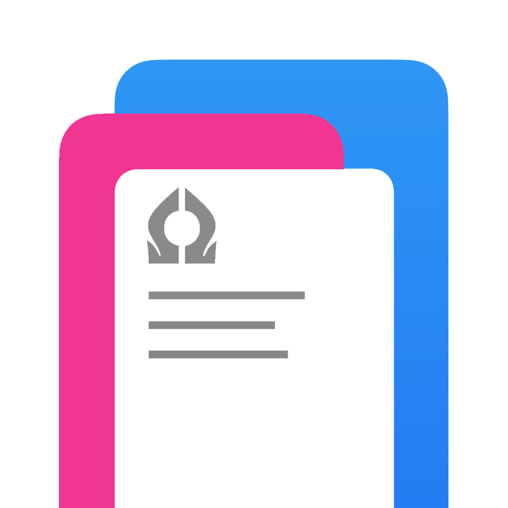

Welcome
Set up this device
Please sign in
Sign me in
Back
Are you the owner of this device ?
Yes, I am
No , I am not
Choose no if you're using school provided device.
Back
Finished !
Start using an app